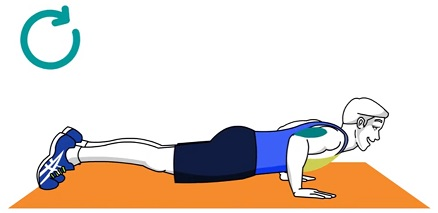

Lay with your toes on the ground holding yourself up with your hands. Lower your torso to the ground until your elbows reach a 90-degree angle. Keep your elbows close to your body for more resistance. Keep your head facing forward. Try to have the tip of your nose pointed directly ahead. Keep your body in a flat plank—do not drop your hips, and do not have your butt hanging in the air. It is important to keep your body as straight as possible. Remember to breathe as you lower yourself. -When doing push-ups, your chest should come within inches of the ground each time you go down for a rep. Remember to keep your body at a flat level.
Breathe out as you push. The power for that push will come from your shoulders and chest working in unison. The triceps (the muscle on the back side of your upper arm) are also contracted but they aren't the primary muscle group being used. Don't be tempted to use your rear end or your stomach. Continue to exert force until your arms are almost in a straight position again, make sure to not lock your arms.
Each pair counts as a single push up. Do this until you finish your set or you hit your maximum.